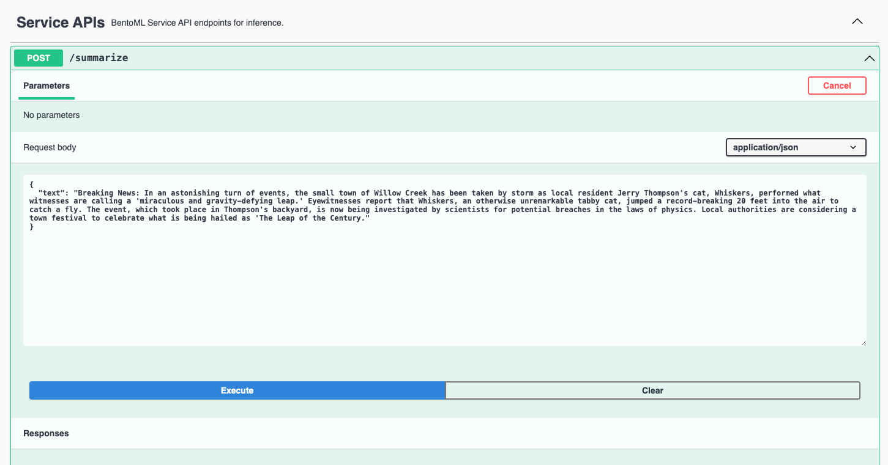

Quickstart#
This quickstart demonstrates how to build a text summarization application with a Transformer model sshleifer/distilbart-cnn-12-6 from the Hugging Face Model Hub. It helps you become familiar with the BentoML workflow and gain a basic understanding of the model serving lifecycle in BentoML. Specifically, you will do the following in this tutorial:
Set up the BentoML environment
Create a BentoML Service
Serve the model locally
You can find all the project files in the quickstart GitHub repository.
Prerequisites#
Python 3.8+ and
pipinstalled. See the Python downloads page to learn more.(Optional) We recommend you create a virtual environment for dependency isolation. See the Conda documentation or the Python documentation for details.
Install dependencies#
Run the following command to clone the repository and install the required dependencies.
git clone https://github.com/bentoml/quickstart.git
cd quickstart
pip install -r requirements.txt
Create a BentoML Service#
You can define the serving logic of the model in a service.py file by creating a BentoML Service. Here is the example file in this project:
from __future__ import annotations
import bentoml
from transformers import pipeline
EXAMPLE_INPUT = "Breaking News: In an astonishing turn of events, the small town of Willow Creek has been taken by storm as local resident Jerry Thompson's cat, Whiskers, performed what witnesses are calling a 'miraculous and gravity-defying leap.' Eyewitnesses report that Whiskers, an otherwise unremarkable tabby cat, jumped a record-breaking 20 feet into the air to catch a fly. The event, which took place in Thompson's backyard, is now being investigated by scientists for potential breaches in the laws of physics. Local authorities are considering a town festival to celebrate what is being hailed as 'The Leap of the Century."
@bentoml.service(
resources={"cpu": "2"},
traffic={"timeout": 10},
)
class Summarization:
def __init__(self) -> None:
self.pipeline = pipeline('summarization')
@bentoml.api
def summarize(self, text: str = EXAMPLE_INPUT) -> str:
result = self.pipeline(text)
return result[0]['summary_text']
In BentoML, a Service is a deployable and scalable unit, defined as a Python class with the @bentoml.service decorator. It can manage states and their lifecycle, and expose one or multiple APIs accessible through HTTP. Each API within the Service is defined using the @bentoml.api decorator, specifying it as a Python function.
In the Summarization class, the Service retrieves a pre-trained model (sshleifer/distilbart-cnn-12-6) from the Hugging Face hub and initializes a pipeline for text summarization. The summarize method serves as the API endpoint. In this example, it accepts a string input with a sample provided, processes it through the pipeline, and returns the summarized text.
Run bentoml serve service:<service_class_name> in your project directory to start the BentoML server.
$ bentoml serve service:Summarization
2024-02-02T07:16:14+0000 [WARNING] [cli] Converting 'Summarization' to lowercase: 'summarization'.
2024-02-02T07:16:15+0000 [INFO] [cli] Starting production HTTP BentoServer from "service:Summarization" listening on http://localhost:3000 (Press CTRL+C to quit)
The server is active at http://localhost:3000. You can interact with it in different ways.
curl -X 'POST' \
'http://localhost:3000/summarize' \
-H 'accept: text/plain' \
-H 'Content-Type: application/json' \
-d '{
"text": "Breaking News: In an astonishing turn of events, the small town of Willow Creek has been taken by storm as local resident Jerry Thompson'\''s cat, Whiskers, performed what witnesses are calling a '\''miraculous and gravity-defying leap.'\'' Eyewitnesses report that Whiskers, an otherwise unremarkable tabby cat, jumped a record-breaking 20 feet into the air to catch a fly. The event, which took place in Thompson'\''s backyard, is now being investigated by scientists for potential breaches in the laws of physics. Local authorities are considering a town festival to celebrate what is being hailed as '\''The Leap of the Century."
}'
import bentoml
with bentoml.SyncHTTPClient("http://localhost:3000") as client:
result = client.summarize(
text="Breaking News: In an astonishing turn of events, the small town of Willow Creek has been taken by storm as local resident Jerry Thompson's cat, Whiskers, performed what witnesses are calling a 'miraculous and gravity-defying leap.' Eyewitnesses report that Whiskers, an otherwise unremarkable tabby cat, jumped a record-breaking 20 feet into the air to catch a fly. The event, which took place in Thompson's backyard, is now being investigated by scientists for potential breaches in the laws of physics. Local authorities are considering a town festival to celebrate what is being hailed as 'The Leap of the Century.'"
)
Visit http://localhost:3000, scroll down to Service APIs, and click Try it out. In the Request body box, enter your prompt and click Execute.
Expected output:
Whiskers, an otherwise unremarkable tabby cat, jumped a record-breaking 20 feet into the air to catch a fly . The event is now being investigated by scientists for potential breaches in the laws of physics . Local authorities considering a town festival to celebrate what is being hailed as 'The Leap of the Century'
Once the Service is ready, you can deploy this BentoML project on BentoCloud or create a Docker image for it and ship it anywhere.